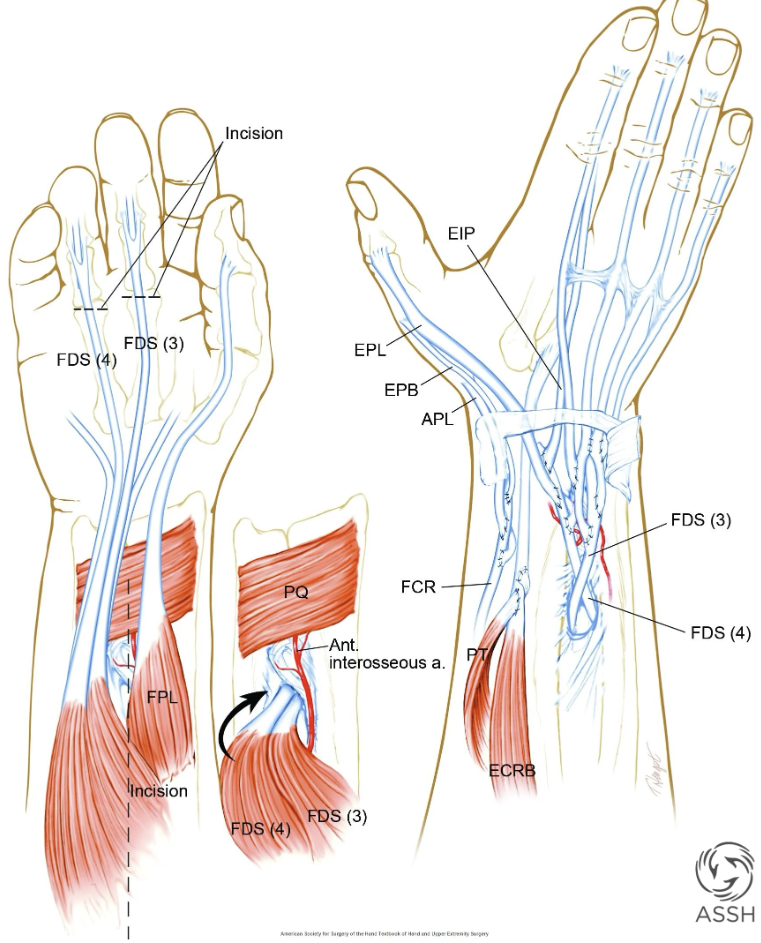

Radial nerve has best recovery prognosis of the
three major UE nerves: shorter distance to motor end plates, larger
caliber, distinct fascicular organization, motor-predominant with
similar target muscles
Workup
Exam
High radial palsy: loss of BR, ECRL, ECRB, EDC,
ECU, EIP, thumb extensors → no wrist/finger/thumb MCP extension +
decreased 2PD dorsal hand
Very proximal: also loses triceps + posterior arm sensation
9 patients also received concurrent PT→ECRB tendon transfer as
dynamic internal splint
Key teaching point: nerve transfers restore
independent finger extension and don’t sacrifice wrist flexion power.
The trade-off is 9-12 months waiting for reinnervation vs immediate
function with tendon transfer.
Observe 3 months after injury; 6-9 months after nerve repair
Can be performed decades after injury (Brodman: successful at 24
years)
Standard Transfers for
High Radial Palsy
Wrist extension: PT → ECRB
(centralized extension) — most common, all three methods use this
Finger + Thumb Extension — 3 Methods:
Method
Finger Extension
Thumb Extension
Key Advantage
Key Drawback
FCU-based (Jones)
FCU → EDC
PL → EPL
Historic standard
Loses ulnar deviation → radial drift; FCU excursion may be
short
FCR-based (Starr/Brand)
FCR → EDC
PL → EPL
Preserves FCU (powerful flexor)
FCR excursion may require wrist flexion for full finger extension;
needs PL
FDS-based (Boyes)
FDS III → EDC
EIP → EPL
Best excursion match; works when PL absent
Loses FDS grip strength; IOM route risks AIN/PIN vessels
FCR-based advantage: preserves FCU (most powerful
wrist flexor) for a balanced wrist. Trade-off: may need slight wrist
flexion for full finger extension. If PL absent, switch to FDS-based
method.
FCR-based (Brand) radial nerve transfers:
PT → ECRB, FCR → EDC (preserving FCU), and PL → EPL. (ASSH
Handthology)

FDS-based (Boyes) radial nerve transfers:
PT → ECRB, FDS III → EDC, and EIP → EPL — the option with the best
excursion match, usable when PL is absent. (ASSH
Handthology)
Outcomes
Moussavi (41 pts): all three methods successful; no
ROM/DASH/RTW difference; 95% would repeat; mean RTW 4.5 months (FCR
group)
Ishida & Ikuta (21 pts, FCR-based, 11.3 yr):
avg wrist extension 54°, flexion 42°; MCP extension 5° with wrist at 30°
extension; grip 63% contralateral; bowstringing in 12/21 (all
PL→EPL)
Triceps
Restoration (Rare — Very Proximal Injury)
Posterior deltoid → triceps (needs graft to
elongate) or biceps → triceps (single-stage,
simpler)
Open fractures + radial palsy → early exploration (lower spontaneous
recovery)
PT → ECRB is universal across all three transfer methods — start
learning this one
Don’t sacrifice FCU if you can avoid it — it’s the most powerful
wrist flexor and critical for ulnar deviation
PL absence (up to 20%) shifts you from FCR-based to FDS-based
method
Concurrent nerve transfer + tendon transfer (e.g., FDS→ECRB as
“internal splint” while awaiting nerve transfer recovery) is an emerging
strategy
Full passive ROM mandatory before any tendon transfer
Board-Style Questions (4)
Q: A patient sustains a closed mid-shaft humerus
fracture with complete wrist drop. At 6 weeks, EMG shows no MUPs in
radial-innervated muscles. What is the management? — A:
Continue observation to 3 months total; 71% of closed fracture radial
palsies recover spontaneously. Splint with cock-up orthosis + maintain
passive ROM.
Q: In a FCR-based tendon transfer for radial nerve
palsy, which tendon powers wrist extension, finger extension, and thumb
extension? — A: PT → ECRB (wrist), FCR → EDC (fingers),
PL → EPL (thumb).
Q: What is the primary advantage of nerve transfer
over tendon transfer for radial nerve palsy? — A: Nerve
transfer restores independent finger extension, avoids sacrifice of
wrist flexion strength, and avoids the radial deviation deformity seen
with FCU-based tendon transfers.
Q: What radial nerve graft gap length is associated
with significantly worse outcomes? — A: > 8 cm
(Petkovic); for median nerve > 5 cm, for ulnar nerve > 4.5
cm.
References
Ray WZ, Mackinnon SE. Clinical outcomes following median to radial
nerve transfers. J Hand Surg. 2011;36(2):201-208.
Moussavi AA. Outcome of tendon transfer for radial nerve paralysis:
comparison of three methods. Indian J Orthop.
2011;45(6):558-562.
Jain NS, et al. Tendon transfers, nerve grafts, and nerve transfers
for isolated radial nerve palsy: systematic review. Hand.
2023;19(3):343-351.
Bertelli JA. Nerve versus tendon transfer for radial nerve paralysis
reconstruction. J Hand Surg Am. 2020;45(5):418-426.